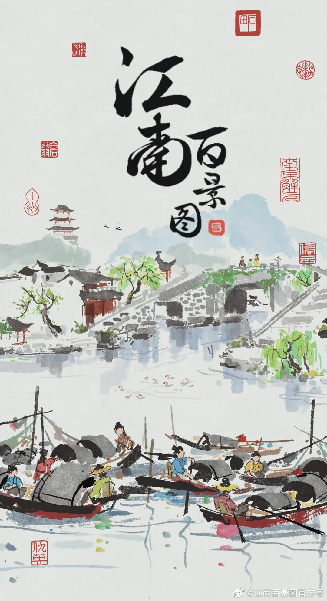
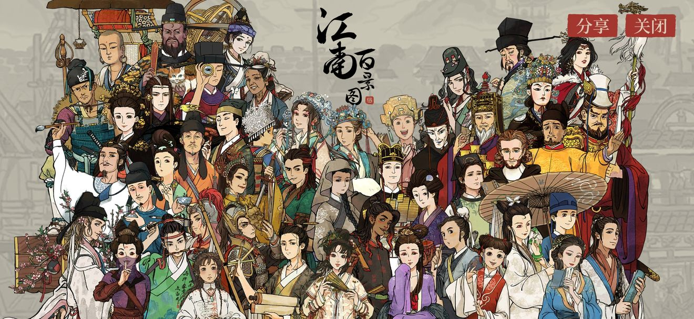
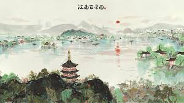
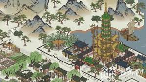
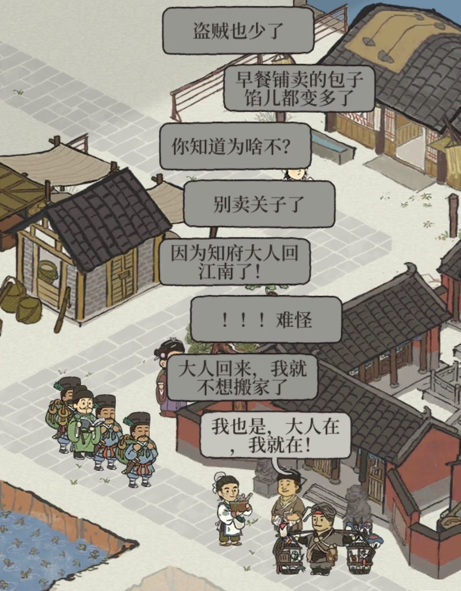
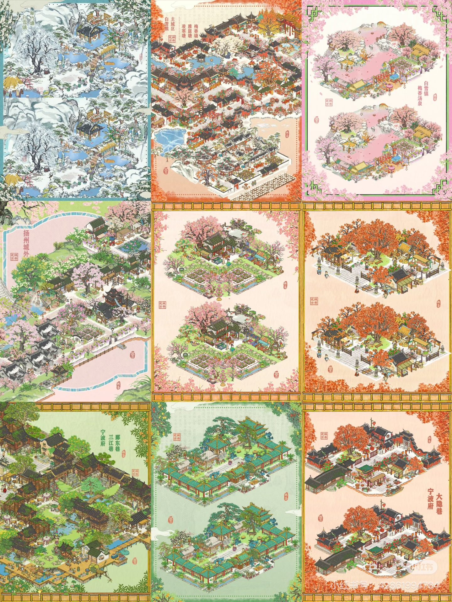
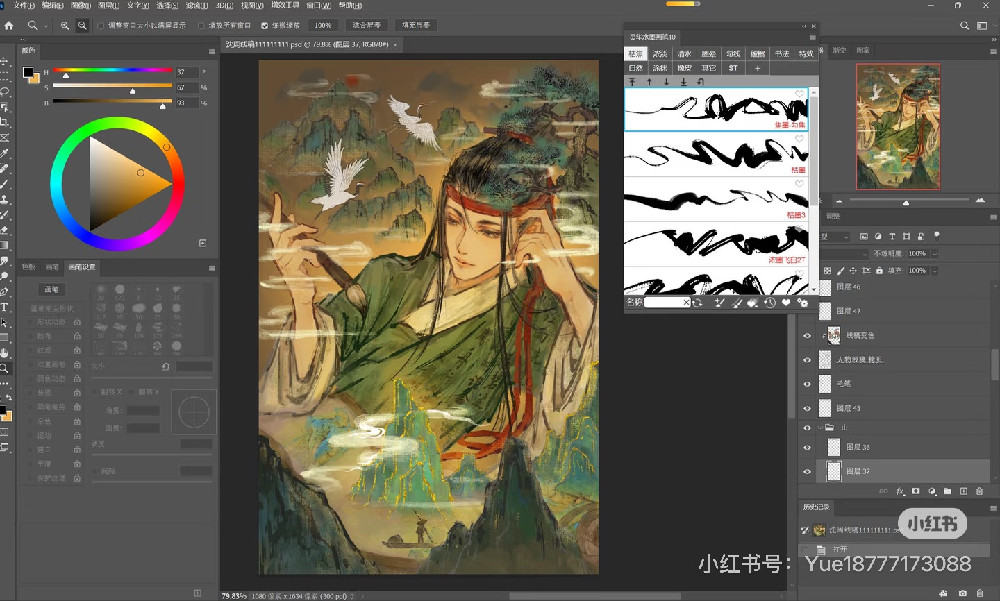
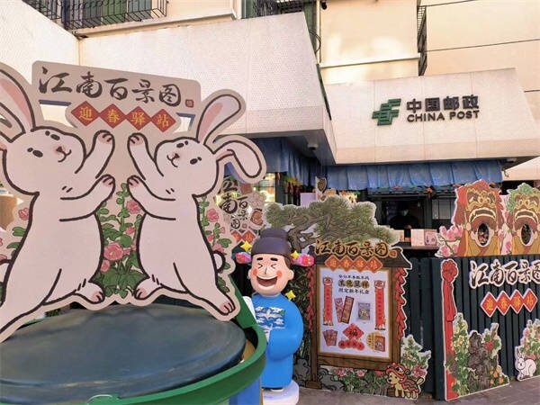

游戏策划分析 · Case Analysis
袁 清 渠 · 设 计 制 作
“我要这画卷里都是你的故事”
向下探索
游戏类型 · 核心体验 · 玩法定位
这是一款以明代江南为背景的模拟经营手游。玩家化身知府，通过规划城市、经营产业、安排居民起居，一步步重绘江南盛景。
不同于高强度的策略博弈，其核心而在于慢节奏的建造与探索之中，获得一种对数字世界的掌控感和审美满足。
它成功地把一款经营游戏，做成了一处可以栖居的虚拟精神家园，在快节奏的现代生活中提供了稀缺的情绪价值。

将高饱和度的传统文化符号进行「低门槛」的数字化复刻，把游戏变成了一个可以栖居的虚拟精神家园，从而在快节奏的现代生活中，提供了一种稀缺的情绪价值。

点击卡片查看完整因果分析




社交裂变与虚实闭环
游戏画风极具辨识度，抽卡机制带有随机性，每一次“好运降临”都天然是值得分享的内容。
因为玩家乐于分享城市布局或抽卡瞬间，所以激发了大量UGC 内容（同人图、表情包、攻略），形成了自发运转的传播飞轮。

游戏对江南城市的精准还原，甚至反向带动了线下旅游，玩家在虚拟世界与地标建立了情感连接，转而去现实中“打卡”。
因为玩家在游戏中对大报恩寺等地标产生了虚拟地方依恋，所以会自发前往现实景点打卡，完成了一次从线上到线下的文化体验闭环。

Section 05 · 总结提炼 · Conclusion
《江南百景图》用数字媒介的互动性消解了历史的厚重感，让传统文化不再是展览馆里的文物，而成为了一个可以被大众自由体验、改造和消费的数字生活空间。事实上，文化产品的破圈往往不来自内容的“高”“大”“全”，而来自情感的精准共鸣。